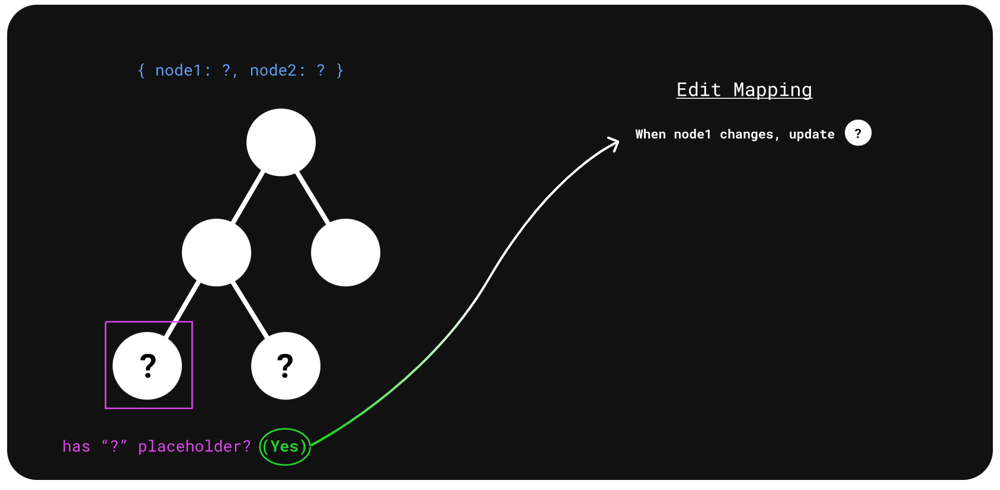
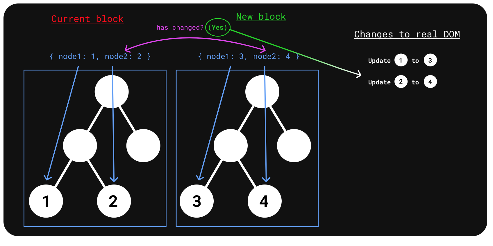

Million.js
Agenda
- The beginning of Angular.js and dirty checking mechanism
- React and the Virtual DOM
- Virtual DOM - the blessing and the curse
- Million.js what is it and why is it up to 70% faster?
- The pros and cons of using Million.js
- Summary and take aways
Angular.js was introduced
function MyController($scope) {
$scope.myVar = 1;
$scope.$watch('myVar', function() {
alert('hey, myVar has changed!');
});
$scope.buttonClicked = function() {
$scope.myVar = 2; // This will trigger $watch expression to kick in
};
}
Angular Dirty Checking mechanism workflow
How can we detect state changes even better and faster?

What if we create a complete tree representation of all html elements
And then only rerender the nodes that has changed?
Then when we update the state, we traverse the tree and see which node has changed, and then only update that specific node?
But how are we going to create such an representation?
We usually have all html and js in seperate files?
What if we put HTML inside the JS files?
First reaction
Current reaction
Virtual DOM

What is the con of Virtual DOM?
- New way of thinking - Declarative vs imperative
- Slow performance when having many nodes
- useMemo
- useCallback
- Virtualization
Virtual DOM is pure overhead
Article by Rich Harris

The Block Virtual DOM
- Static Analysis: The virtual DOM is analyzed to extract dynamic parts of the tree into a "Edit Map," or the list of the "edits" (mappings) of the dynamic parts of the virtual DOM to the state.
- Dirty Checking: The state (not the virtual DOM tree) is diffed to determine what has changed. If the state has changed, the DOM is updated directly via the Edit Map.
Diff the data, not the DOM.
Why? The size of data is generally much smaller than the size of the DOM. It also can be much simpler to diff data values than to diff full DOM nodes.
Static analysis
Dirty checking
Is million.js effective?
.png)
When to use million.js?

How to use million.js?

When not to use million.js?

Summary / takeaway
- The future is a mix of virtual dom/blockdom vs compilers
- The virtual dom is fast, but has slow performance with many nodes
- million.js can improve the performance
- Million.js is great with alot of static content
- Million.js is slow with little static content and lots of dynamic data